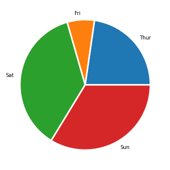

Pie Chart
Pie Chart#
A Pie Chart is a circle divided into sectors that each represent a proportion of the whole. It is one of the most common viz type, but also probably the most criticized.
import seaborn as sns
import matplotlib.pyplot as plt
df = sns.load_dataset('tips')
df.head()
| total_bill | tip | sex | smoker | day | time | size | |
|---|---|---|---|---|---|---|---|
| 0 | 16.99 | 1.01 | Female | No | Sun | Dinner | 2 |
| 1 | 10.34 | 1.66 | Male | No | Sun | Dinner | 3 |
| 2 | 21.01 | 3.50 | Male | No | Sun | Dinner | 3 |
| 3 | 23.68 | 3.31 | Male | No | Sun | Dinner | 2 |
| 4 | 24.59 | 3.61 | Female | No | Sun | Dinner | 4 |
grouped = df.groupby('day')['total_bill'].sum().reset_index()
grouped.head()
| day | total_bill | |
|---|---|---|
| 0 | Thur | 1096.33 |
| 1 | Fri | 325.88 |
| 2 | Sat | 1778.40 |
| 3 | Sun | 1627.16 |
fig = plt.figure(figsize=(6, 6))
fig.patch.set_facecolor('white')
plt.pie(grouped['total_bill'], labels=grouped['day'], wedgeprops = { 'linewidth' : 3, 'edgecolor' : 'white' })
plt.show()
